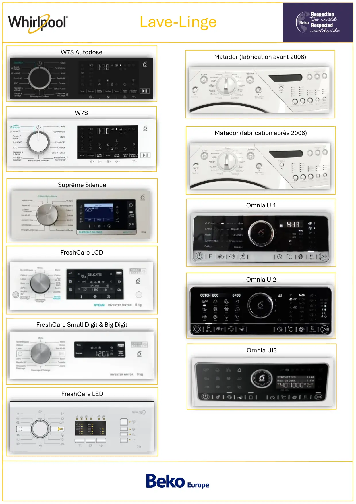

Lave-LingeOmnia UI3W7S AutodoseW7SSuprême SilenceUne image contenant texte, Appareils électroniques, multimédia, destinataireLe contenu généré par l’IA peut être incorrect.FreshCare Small Digit & Big DigitUne image contenant texte, lectroménager, électroménager, conceptionLe contenu généré par l’IA peut être incorrect.FreshCare LCDUne image contenant texte, Appareils électroniques, Électroménager, capture d écranLe contenu généré par l’IA peut être incorrect.FreshCare LEDMatador (fabrication avant 2006)Une image contenant électroménager, appareil de cuisine, lectroménager, machine à laverLe contenu généré par l’IA peut être incorrect.Matador (fabrication après 2006)U eage co e aé ec o é age , appa e de cu s e,ec o é age ,ace à a eLe contenu généré par l’IA peut être incorrect.Omnia UI1Une image contenant texte, Appareils électroniques, Appareil électronique, gadgetLe contenu généré par l’IA peut être incorrect.Omnia UI2Une image contenant Appareil électronique, texte, gadget, Appareils électroniquesLe contenu généré par l’IA peut être incorrect.
1 / 1Liens de ce document (11)
PDFProg Test lave linge Whirlpool Horizon ElecW7S Autodose2 p.PDFProg Test lave linge Whirlpool Horizon ElecW7S2 p.PDFProg Test lave linge Whirlpool SupremeSilence6 p.PDFProg Test lave linge Whirlpool FreshCare smallDigit9 p.PDFProg Test lave linge Whirlpool FreshCare LCD9 p.PDFProg Test lave linge Whirlpool FreshCare Leds10 p.PDFProg Test lave linge Whirlpool Matador Fabriqué avant 20069 p.PDFProg Test lave linge Whirlpool Matador Fabriqué après 20069 p.PDFProg Test lave linge Whirlpool Omnia U13 p.PDFProg Test lave linge Whirlpool Omnia UI23 p.PDFProg Test lave linge Whirlpool Omnia UI33 p.